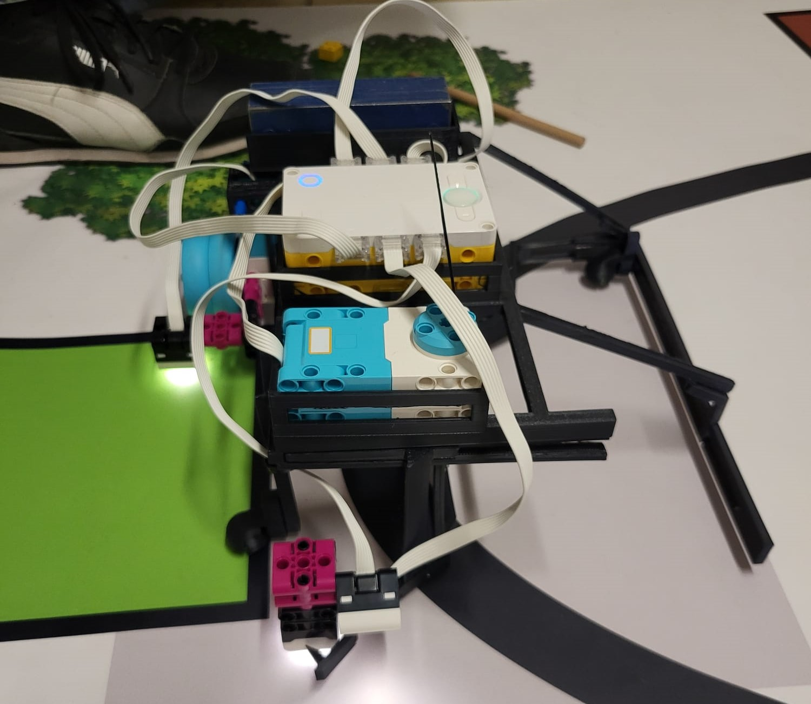
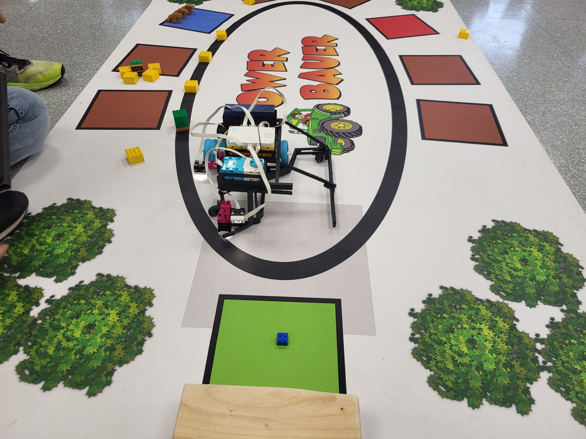
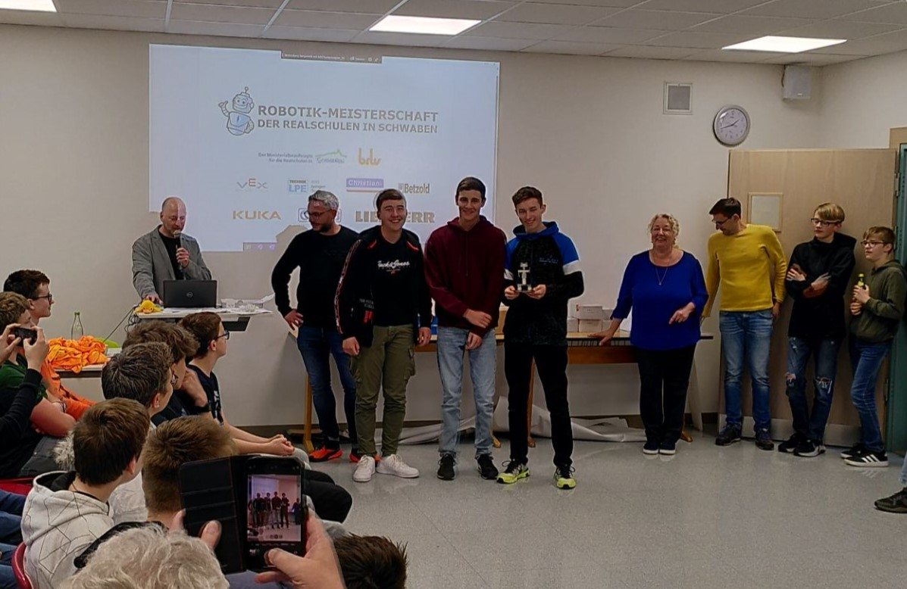
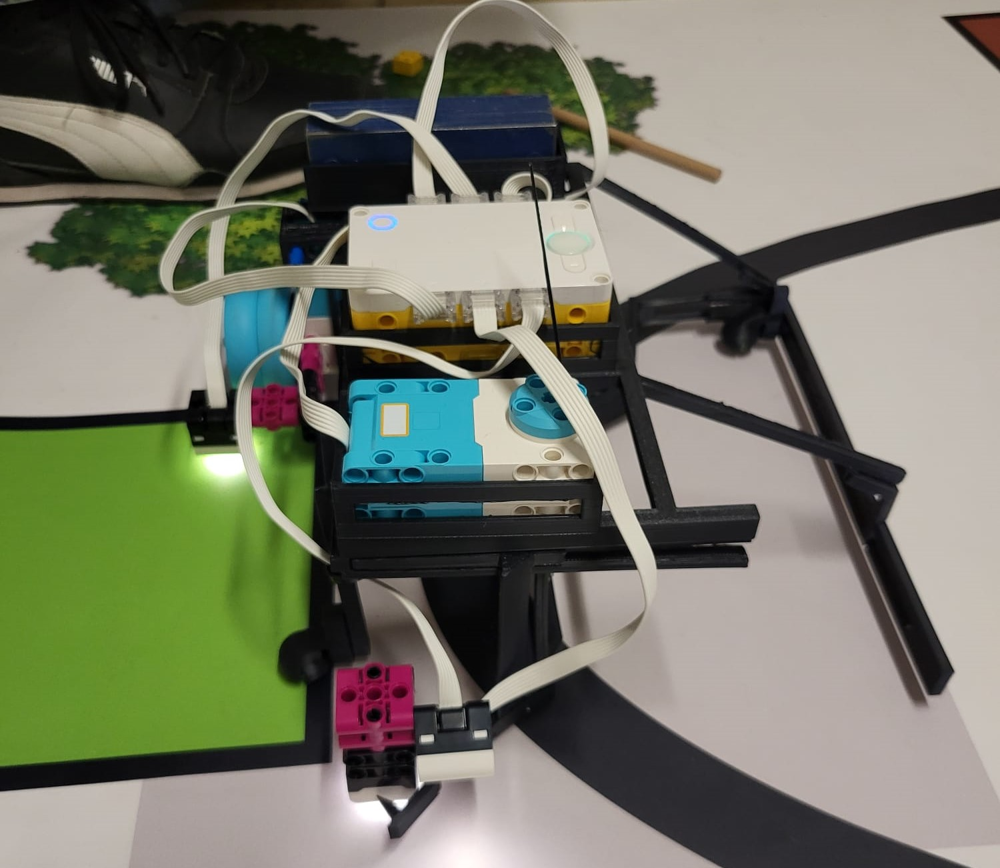
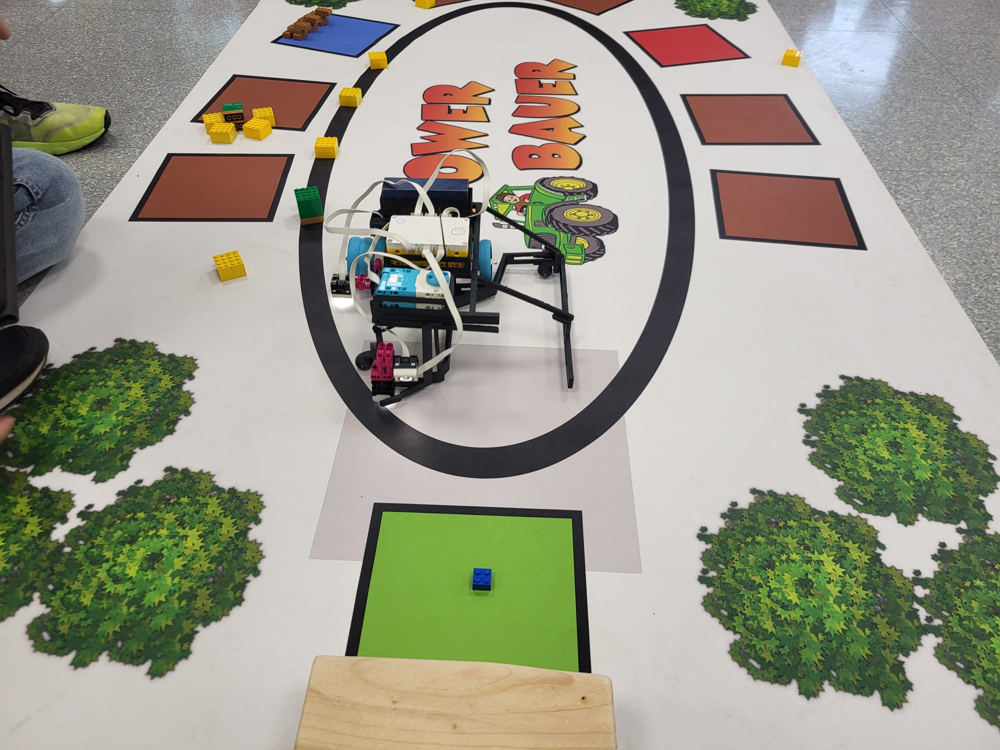
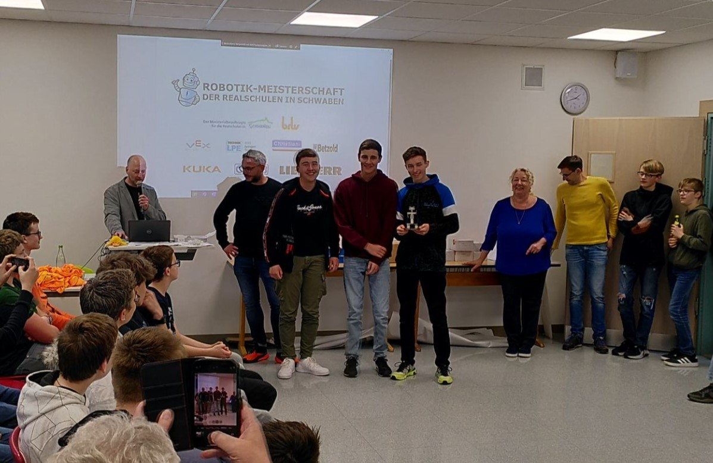

Die Webseite befindet sich momentan in Arbeit
Die Webseite befindet sich momentan in Arbeit 
 Die Webseite befindet sich momentan in Arbeit
Die Webseite befindet sich momentan in Arbeit 
Willkommen
bei Nex Studio
(Ein Spieleprogrammier Studio in Deutschland) Auch ein Hallo von mir Moritz Ende, Hir seid ihr momentan auf meiner Homepage.
Ihr findet hier neuichkeiten von mir über bestimmte Ereignisse und links zu meinen Projekten, Videos und Mehr zu mir.
Im Mai 2024 hat unser Team Techflash an der Robotik Bayernmeisterschaft teilgenommen. Die aufgabe welche es zu bewältigen galt war, die Holtzklötzchen(Gelben Steine) in das rote Feld zu bringen. Die Bäume(Grüne Steine) durften währendessen nicht umfallen oder die schwarze Line verlassen. Im grünen Feld lag noch ein WasserBlock(Blauer Stein) Welchen man zu den tieren im blauen Feld bringen musste ohne diese vom Feld zu schieben. Die wertung sah folgt aus, pro Holtzklötzchen im roten Feld +4 Punkte und wenn diese im braunen wahren +2 Punkte, wenn der Blaue Stein im grünen Feld wahr gab es +5 Punkte, Für jeden umgewofenen Baum gab es -10 Punkte, wenn die Tiere das Blaue Feld verlassen haben gibt es pro Tier -5 Punkte. Wir wurden mit Matthias Mezger, Felix Becker und Ich 3. Platz. Im Bayernfinale hat nicht alles auf der Finalen Spiel matte reibungslos funktioniert und wir landeten unter den stolzen top 10.
 





Trette meiner Community bei um keine events und spanende aktionen zu verpassen.
Meine CommunitySchaue meine neusten projekte und Development Logs im Kurzvideo Format an.
Hier das bin ichKriege einen einblick in meine Projekte und in unsere entwicklung des studios.
Hier das bin ichFür alle die es genau wissen wollen haben wir hier auch spannende videos zu einigen Themen.
Hier das bin ich